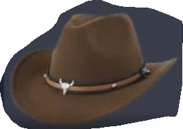
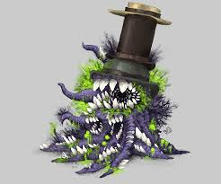

File-005 — The Hat
Visual Record:
 Documented Images during containment
Description:
The Hat is a clothing type wild anomaly. While it contains with wild magic, it contains some kind of foreign magic that seems to attempt to corrupt it. Though despite such it is a very docile entity. It has the ability to shapeshift into clothing and whenever anything is threatening it's self-defense shell will then cause a mild explosion.
Containment Protocol:
- None needed
- Formerly - (Must be contained with the SSLLWMACD also known as a Spectral Shackler (™) Low Level Wild Magic Anomaly Capture Device )
Addendum 005-A:
The hat seems to have grown an attachment to the individual, "Giyae". Thus Giyae must be brought to the Research Zone for further testing.